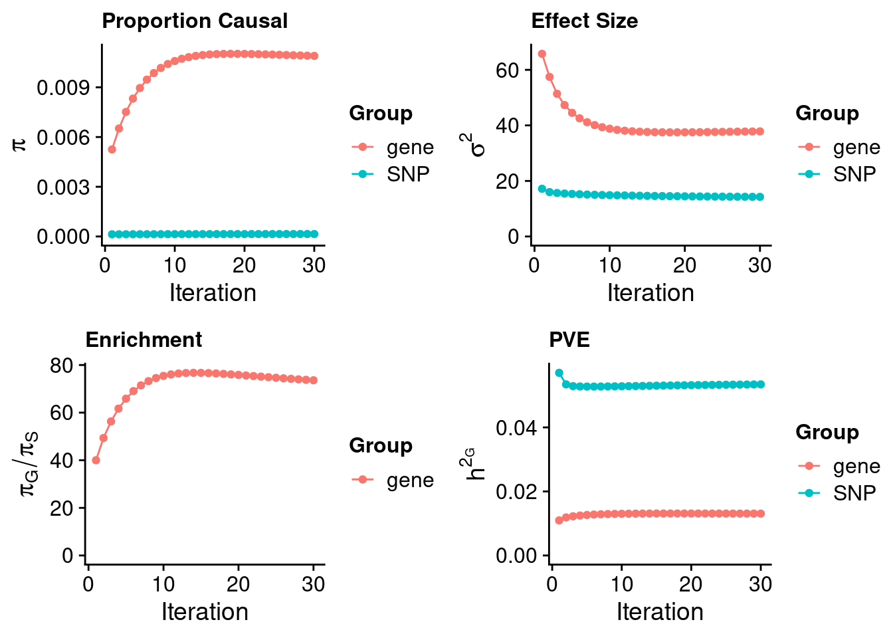
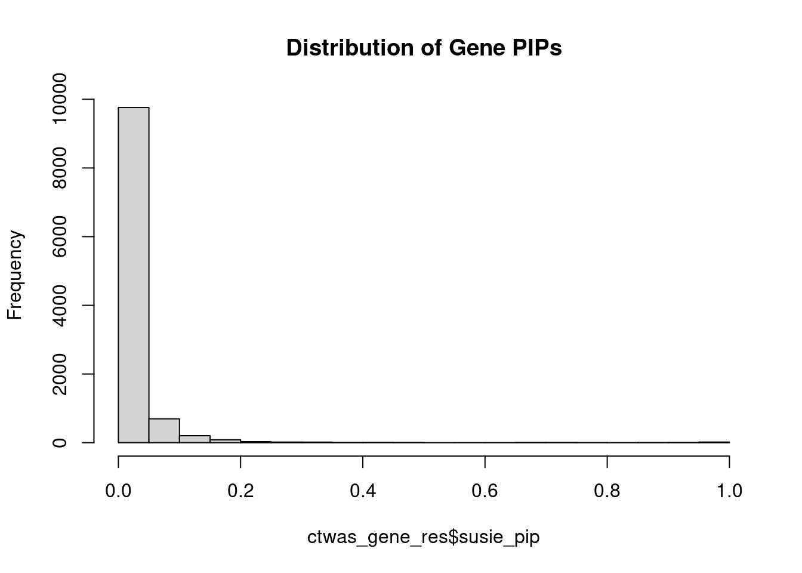

Last updated: 2023-03-30
Checks: 5 2
Knit directory: cTWAS_analysis/
This reproducible R Markdown analysis was created with workflowr (version 1.7.0). The Checks tab describes the reproducibility checks that were applied when the results were created. The Past versions tab lists the development history.
The R Markdown is untracked by Git. To know which version of the R Markdown file created these results, you’ll want to first commit it to the Git repo. If you’re still working on the analysis, you can ignore this warning. When you’re finished, you can run wflow_publish to commit the R Markdown file and build the HTML.
Great job! The global environment was empty. Objects defined in the global environment can affect the analysis in your R Markdown file in unknown ways. For reproduciblity it’s best to always run the code in an empty environment.
The command set.seed(20211220) was run prior to running the code in the R Markdown file. Setting a seed ensures that any results that rely on randomness, e.g. subsampling or permutations, are reproducible.
Great job! Recording the operating system, R version, and package versions is critical for reproducibility.
Nice! There were no cached chunks for this analysis, so you can be confident that you successfully produced the results during this run.
Using absolute paths to the files within your workflowr project makes it difficult for you and others to run your code on a different machine. Change the absolute path(s) below to the suggested relative path(s) to make your code more reproducible.
| absolute | relative |
|---|---|
| /project2/xinhe/shengqian/cTWAS/cTWAS_analysis/data/ | data |
| /project2/xinhe/shengqian/cTWAS/cTWAS_analysis/code/ctwas_config_b38.R | code/ctwas_config_b38.R |
Great! You are using Git for version control. Tracking code development and connecting the code version to the results is critical for reproducibility.
The results in this page were generated with repository version 26813a2. See the Past versions tab to see a history of the changes made to the R Markdown and HTML files.
Note that you need to be careful to ensure that all relevant files for the analysis have been committed to Git prior to generating the results (you can use wflow_publish or wflow_git_commit). workflowr only checks the R Markdown file, but you know if there are other scripts or data files that it depends on. Below is the status of the Git repository when the results were generated:
Ignored files:
Ignored: .Rhistory
Ignored: .ipynb_checkpoints/
Untracked files:
Untracked: LDL_LDLR_genetrack.pdf
Untracked: LDL_LDLR_locus.pdf
Untracked: LDL_TEME199_genetrack.pdf
Untracked: LDL_TEME199_locus.pdf
Untracked: Proposal plots.R
Untracked: RGS14.pdf
Untracked: RNF186.pdf
Untracked: Rplots.pdf
Untracked: SCZ_annotation.xlsx
Untracked: SLC8B1.pdf
Untracked: analysis/.ipynb_checkpoints/
Untracked: analysis/LDL_Liver_03.Rmd
Untracked: analysis/LDL_Liver_05.Rmd
Untracked: cache/
Untracked: code/.ipynb_checkpoints/
Untracked: code/LDL_03_out/
Untracked: code/LDL_05_out/
Untracked: code/run_LDL_analysis_03.sbatch
Untracked: code/run_LDL_analysis_03.sh
Untracked: code/run_LDL_analysis_05.sbatch
Untracked: code/run_LDL_analysis_05.sh
Untracked: code/run_LDL_ctwas_rss_LDR_03.R
Untracked: code/run_LDL_ctwas_rss_LDR_05.R
Untracked: data/.ipynb_checkpoints/
Untracked: data/FUMA_output/
Untracked: data/GO_Terms/
Untracked: data/GTEx_Analysis_v8_eQTL.tar
Untracked: data/G_list.RData
Untracked: data/IBD_ME/
Untracked: data/LDL/
Untracked: data/LDL_03/
Untracked: data/LDL_05/
Untracked: data/LDL_E_S/
Untracked: data/LDL_M/
Untracked: data/LDL_S/
Untracked: data/PGC3_SCZ_wave3_public.v2.tsv
Untracked: data/SCZ/
Untracked: data/SCZ_2018/
Untracked: data/SCZ_2018_S/
Untracked: data/SCZ_2020/
Untracked: data/SCZ_S/
Untracked: data/Supplementary Table 15 - MAGMA.xlsx
Untracked: data/Supplementary Table 20 - Prioritised Genes.xlsx
Untracked: data/UKBB/
Untracked: data/UKBB_SNPs_Info.text
Untracked: data/WhiteBlood_E/
Untracked: data/WhiteBlood_E_M/
Untracked: data/WhiteBlood_E_S_M/
Untracked: data/WhiteBlood_M/
Untracked: data/cpg_annot.RData
Untracked: data/eqtl/
Untracked: data/gencode.v26.GRCh38.genes.gtf
Untracked: data/gene_OMIM.txt
Untracked: data/gene_pip_0.8.txt
Untracked: data/gwas_sumstats/
Untracked: data/magma.genes.out
Untracked: data/mashr_Heart_Atrial_Appendage.db
Untracked: data/mashr_sqtl/
Untracked: data/mqtl/
Untracked: data/notes.txt
Untracked: data/scz_2018.RDS
Untracked: data/summary_known_genes_annotations.xlsx
Untracked: hist.pdf
Untracked: submit.sh
Untracked: temp.regionlist.RDS
Untracked: temp.regions.txt
Untracked: temp.susieIrss.txt
Untracked: temp.temp.susieIrssres.Rd
Untracked: temp_LDR/
Untracked: temp_ld_R_chr1.txt
Untracked: temp_ld_R_chr10.txt
Untracked: temp_ld_R_chr11.txt
Untracked: temp_ld_R_chr12.txt
Untracked: temp_ld_R_chr13.txt
Untracked: temp_ld_R_chr14.txt
Untracked: temp_ld_R_chr15.txt
Untracked: temp_ld_R_chr16.txt
Untracked: temp_ld_R_chr17.txt
Untracked: temp_ld_R_chr18.txt
Untracked: temp_ld_R_chr19.txt
Untracked: temp_ld_R_chr2.txt
Untracked: temp_ld_R_chr20.txt
Untracked: temp_ld_R_chr21.txt
Untracked: temp_ld_R_chr22.txt
Untracked: temp_ld_R_chr3.txt
Untracked: temp_ld_R_chr4.txt
Untracked: temp_ld_R_chr5.txt
Untracked: temp_ld_R_chr6.txt
Untracked: temp_ld_R_chr7.txt
Untracked: temp_ld_R_chr8.txt
Untracked: temp_ld_R_chr9.txt
Untracked: temp_reg.txt
Unstaged changes:
Deleted: analysis/Atrial_Fibrillation_Heart_Atrial_Appendage.Rmd
Deleted: analysis/Atrial_Fibrillation_Heart_Left_Ventricle.Rmd
Deleted: analysis/Autism_Brain_Amygdala.Rmd
Deleted: analysis/Autism_Brain_Anterior_cingulate_cortex_BA24.Rmd
Deleted: analysis/Autism_Brain_Caudate_basal_ganglia.Rmd
Deleted: analysis/Autism_Brain_Cerebellar_Hemisphere.Rmd
Deleted: analysis/Autism_Brain_Cerebellum.Rmd
Deleted: analysis/Autism_Brain_Cortex.Rmd
Deleted: analysis/Autism_Brain_Frontal_Cortex_BA9.Rmd
Deleted: analysis/Autism_Brain_Hippocampus.Rmd
Deleted: analysis/Autism_Brain_Hypothalamus.Rmd
Deleted: analysis/Autism_Brain_Nucleus_accumbens_basal_ganglia.Rmd
Deleted: analysis/Autism_Brain_Putamen_basal_ganglia.Rmd
Deleted: analysis/Autism_Brain_Spinal_cord_cervical_c-1.Rmd
Deleted: analysis/Autism_Brain_Substantia_nigra.Rmd
Deleted: analysis/BMI_Brain_Amygdala.Rmd
Deleted: analysis/BMI_Brain_Amygdala_S.Rmd
Deleted: analysis/BMI_Brain_Anterior_cingulate_cortex_BA24.Rmd
Deleted: analysis/BMI_Brain_Anterior_cingulate_cortex_BA24_S.Rmd
Deleted: analysis/BMI_Brain_Caudate_basal_ganglia.Rmd
Deleted: analysis/BMI_Brain_Caudate_basal_ganglia_S.Rmd
Deleted: analysis/BMI_Brain_Cerebellar_Hemisphere.Rmd
Deleted: analysis/BMI_Brain_Cerebellar_Hemisphere_S.Rmd
Deleted: analysis/BMI_Brain_Cerebellum.Rmd
Deleted: analysis/BMI_Brain_Cerebellum_S.Rmd
Deleted: analysis/BMI_Brain_Cortex.Rmd
Deleted: analysis/BMI_Brain_Cortex_S.Rmd
Deleted: analysis/BMI_Brain_Frontal_Cortex_BA9.Rmd
Deleted: analysis/BMI_Brain_Frontal_Cortex_BA9_S.Rmd
Deleted: analysis/BMI_Brain_Hippocampus.Rmd
Deleted: analysis/BMI_Brain_Hippocampus_S.Rmd
Deleted: analysis/BMI_Brain_Hypothalamus.Rmd
Deleted: analysis/BMI_Brain_Hypothalamus_S.Rmd
Deleted: analysis/BMI_Brain_Nucleus_accumbens_basal_ganglia.Rmd
Deleted: analysis/BMI_Brain_Nucleus_accumbens_basal_ganglia_S.Rmd
Deleted: analysis/BMI_Brain_Putamen_basal_ganglia.Rmd
Deleted: analysis/BMI_Brain_Putamen_basal_ganglia_S.Rmd
Deleted: analysis/BMI_Brain_Spinal_cord_cervical_c-1.Rmd
Deleted: analysis/BMI_Brain_Spinal_cord_cervical_c-1_S.Rmd
Deleted: analysis/BMI_Brain_Substantia_nigra.Rmd
Deleted: analysis/BMI_Brain_Substantia_nigra_S.Rmd
Deleted: analysis/BMI_S_results.Rmd
Deleted: analysis/Glucose_Adipose_Subcutaneous.Rmd
Deleted: analysis/Glucose_Adipose_Visceral_Omentum.Rmd
Modified: analysis/LDL_Liver_E_S.Rmd
Modified: analysis/LDL_Liver_S.Rmd
Modified: analysis/index.Rmd
Deleted: code/White_Blood_M_out/White_Blood_BreastMammary.err
Deleted: code/White_Blood_M_out/White_Blood_BreastMammary.out
Deleted: code/White_Blood_M_out/White_Blood_ColonTransverse.err
Deleted: code/White_Blood_M_out/White_Blood_ColonTransverse.out
Deleted: code/White_Blood_M_out/White_Blood_KidneyCortex.err
Deleted: code/White_Blood_M_out/White_Blood_KidneyCortex.out
Deleted: code/White_Blood_M_out/White_Blood_Lung.err
Deleted: code/White_Blood_M_out/White_Blood_Lung.out
Deleted: code/White_Blood_M_out/White_Blood_MuscleSkeletal.err
Deleted: code/White_Blood_M_out/White_Blood_MuscleSkeletal.out
Deleted: code/White_Blood_M_out/White_Blood_Ovary.err
Deleted: code/White_Blood_M_out/White_Blood_Ovary.out
Deleted: code/White_Blood_M_out/White_Blood_Prostate.err
Deleted: code/White_Blood_M_out/White_Blood_Prostate.out
Deleted: code/White_Blood_M_out/White_Blood_Testis.err
Deleted: code/White_Blood_M_out/White_Blood_Testis.out
Deleted: code/White_Blood_M_out/White_Blood_WholeBlood.err
Deleted: code/White_Blood_M_out/White_Blood_WholeBlood.out
Modified: code/ctwas_config_b38.R
Modified: code/locus_plot.R
Deleted: code/run_IBD_ctwas_rss_LDR_ME.R
Modified: code/run_LDL_ctwas_rss_LDR_E_S.R
Modified: code/run_WhiteBlood_ctwas_rss_LDR_E_M.R
Note that any generated files, e.g. HTML, png, CSS, etc., are not included in this status report because it is ok for generated content to have uncommitted changes.
There are no past versions. Publish this analysis with wflow_publish() to start tracking its development.
[1] 12714[1] 10901
1 2 3 4 5 6 7 8 9 10 11 12 13 14 15 16
1070 768 652 417 494 611 548 408 405 434 634 629 195 365 354 526
17 18 19 20 21 22
663 160 859 306 114 289 [1] 0.8365
#estimated group prior
estimated_group_prior <- estimated_group_prior_all[,ncol(group_prior_rec)]
print(estimated_group_prior) SNP gene
0.0001481 0.0108955 #estimated group prior variance
estimated_group_prior_var <- estimated_group_prior_var_all[,ncol(group_prior_var_rec)]
print(estimated_group_prior_var) SNP gene
14.26 37.84 #estimated enrichment
estimated_enrichment <- estimated_enrichment_all[ncol(group_prior_var_rec)]
print(estimated_enrichment)[1] 73.59#report sample size
print(sample_size)[1] 343621#report group size
print(group_size) SNP gene
8697768 10901 #estimated group PVE
estimated_group_pve <- estimated_group_pve_all[,ncol(group_prior_rec)]
print(estimated_group_pve) SNP gene
0.05343 0.01308 #total PVE
sum(estimated_group_pve)[1] 0.0665#attributable PVE
estimated_group_pve/sum(estimated_group_pve) SNP gene
0.8033 0.1967 #distribution of PIPs
hist(ctwas_gene_res$susie_pip, xlim=c(0,1), main="Distribution of Gene PIPs")
#genes with PIP>0.8 or 20 highest PIPs
head(ctwas_gene_res[order(-ctwas_gene_res$susie_pip),report_cols], max(sum(ctwas_gene_res$susie_pip>0.8), 20)) genename region_tag susie_pip mu2 PVE z num_eqtl
4435 PSRC1 1_67 1.0000 1660.45 4.832e-03 -41.687 1
12008 HPR 16_38 1.0000 157.55 4.585e-04 -17.963 2
3721 INSIG2 2_69 1.0000 67.99 1.979e-04 -8.983 3
5991 FADS1 11_34 0.9994 162.60 4.729e-04 12.926 2
10657 TRIM39 6_24 0.9976 71.05 2.063e-04 8.840 3
5563 ABCG8 2_27 0.9967 308.45 8.947e-04 -20.294 1
12687 RP4-781K5.7 1_121 0.9958 201.51 5.840e-04 -15.108 1
7997 TMEM150A 2_54 0.9936 963.71 2.787e-03 4.079 1
7410 ABCA1 9_53 0.9925 69.96 2.021e-04 7.982 1
1999 PRKD2 19_33 0.9885 29.86 8.590e-05 5.072 2
7999 VAMP5 2_54 0.9874 131.28 3.772e-04 3.439 2
1597 PLTP 20_28 0.9839 62.28 1.783e-04 -5.732 1
8531 TNKS 8_12 0.9829 74.36 2.127e-04 11.039 2
9390 GAS6 13_62 0.9790 70.69 2.014e-04 -8.924 1
5544 CNIH4 1_114 0.9782 40.53 1.154e-04 6.146 2
7040 INHBB 2_70 0.9665 73.57 2.069e-04 -8.519 1
11790 CYP2A6 19_28 0.9643 31.72 8.902e-05 5.407 1
3247 KDSR 18_35 0.9630 24.50 6.865e-05 -4.526 1
6391 TTC39B 9_13 0.9592 22.95 6.406e-05 -4.334 3
6093 CSNK1G3 5_75 0.9482 83.46 2.303e-04 9.116 1
1114 SRRT 7_62 0.9462 32.48 8.945e-05 5.425 2
8579 STAT5B 17_25 0.9381 30.56 8.345e-05 5.426 2
3562 ACVR1C 2_94 0.9367 25.70 7.007e-05 -4.687 2
3300 C10orf88 10_77 0.9337 36.60 9.946e-05 -6.788 2
2092 SP4 7_19 0.9334 101.15 2.748e-04 10.693 1
6778 PKN3 9_66 0.9310 47.25 1.280e-04 -6.621 1
4704 DDX56 7_32 0.9221 58.69 1.575e-04 9.642 2
8865 FUT2 19_33 0.8999 103.69 2.716e-04 -11.927 1
6957 USP1 1_39 0.8862 252.36 6.508e-04 16.258 1
6220 PELO 5_31 0.8828 70.04 1.799e-04 8.288 2
9062 KLHDC7A 1_13 0.8751 21.52 5.480e-05 4.124 1
5415 SYTL1 1_19 0.8537 21.61 5.370e-05 -3.963 1
1009 GSK3B 3_74 0.8518 42.56 1.055e-04 6.475 2
8931 CRACR2B 11_1 0.8459 21.05 5.182e-05 -3.990 1
9072 SPTY2D1 11_13 0.8197 33.21 7.923e-05 -5.557 1
8418 POP7 7_62 0.8041 40.69 9.521e-05 -5.845 1#number of genes for gene set enrichment
length(genes)[1] 36 Description FDR Ratio BgRatio
8 Blood Platelet Disorders 0.01465 2/17 16/9703
34 Hypercholesterolemia, Familial 0.01465 2/17 18/9703
43 Leukemia, T-Cell, Chronic 0.01465 1/17 1/9703
55 Opisthorchiasis 0.01465 1/17 1/9703
64 Tangier Disease 0.01465 1/17 1/9703
81 Caliciviridae Infections 0.01465 1/17 1/9703
87 Infections, Calicivirus 0.01465 1/17 1/9703
104 Opisthorchis felineus Infection 0.01465 1/17 1/9703
105 Opisthorchis viverrini Infection 0.01465 1/17 1/9703
120 Enteropathy-Associated T-Cell Lymphoma 0.01465 1/17 1/9703Loading the functional categories...
Loading the ID list...
Loading the reference list...
Performing the enrichment analysis...
description size overlap FDR database
1 Coronary Artery Disease 153 9 1.360e-05 disease_GLAD4U
2 Dyslipidaemia 84 7 3.723e-05 disease_GLAD4U
3 Coronary Disease 171 8 2.134e-04 disease_GLAD4U
4 Arteriosclerosis 173 7 2.601e-03 disease_GLAD4U
5 Myocardial Ischemia 181 7 2.806e-03 disease_GLAD4U
6 Arterial Occlusive Diseases 174 6 2.231e-02 disease_GLAD4U
7 Hypercholesterolemia 60 4 2.942e-02 disease_GLAD4U
8 Cardiovascular Diseases 282 7 3.059e-02 disease_GLAD4U
userId
1 PSRC1;ABCG8;INSIG2;TTC39B;ABCA1;SPTY2D1;FADS1;FUT2;PLTP
2 PSRC1;ABCG8;INSIG2;TTC39B;ABCA1;FADS1;PLTP
3 PSRC1;ABCG8;INSIG2;TTC39B;ABCA1;FADS1;FUT2;PLTP
4 PSRC1;ABCG8;TTC39B;ABCA1;FADS1;HPR;PLTP
5 PSRC1;ABCG8;INSIG2;TTC39B;ABCA1;FADS1;PLTP
6 PSRC1;ABCG8;TTC39B;ABCA1;FADS1;PLTP
7 ABCG8;INSIG2;ABCA1;PLTP
8 PSRC1;ABCG8;TTC39B;ABCA1;FADS1;GAS6;PLTP
sessionInfo()R version 4.1.0 (2021-05-18)
Platform: x86_64-pc-linux-gnu (64-bit)
Running under: CentOS Linux 7 (Core)
Matrix products: default
BLAS/LAPACK: /software/openblas-0.3.13-el7-x86_64/lib/libopenblas_haswellp-r0.3.13.so
locale:
[1] LC_CTYPE=en_US.UTF-8 LC_NUMERIC=C
[3] LC_TIME=en_US.UTF-8 LC_COLLATE=en_US.UTF-8
[5] LC_MONETARY=en_US.UTF-8 LC_MESSAGES=en_US.UTF-8
[7] LC_PAPER=en_US.UTF-8 LC_NAME=C
[9] LC_ADDRESS=C LC_TELEPHONE=C
[11] LC_MEASUREMENT=en_US.UTF-8 LC_IDENTIFICATION=C
attached base packages:
[1] stats graphics grDevices utils datasets methods base
other attached packages:
[1] WebGestaltR_0.4.4 disgenet2r_0.99.2 enrichR_3.1 cowplot_1.1.1
[5] ggplot2_3.4.0 workflowr_1.7.0
loaded via a namespace (and not attached):
[1] httr_1.4.4 sass_0.4.4 vroom_1.6.0 bit64_4.0.5
[5] jsonlite_1.8.4 foreach_1.5.2 bslib_0.4.1 assertthat_0.2.1
[9] getPass_0.2-2 highr_0.9 doRNG_1.8.2 blob_1.2.3
[13] yaml_2.3.6 pillar_1.8.1 RSQLite_2.2.19 lattice_0.20-44
[17] glue_1.6.2 digest_0.6.31 promises_1.2.0.1 colorspace_2.0-3
[21] htmltools_0.5.4 httpuv_1.6.7 Matrix_1.3-3 plyr_1.8.8
[25] pkgconfig_2.0.3 scales_1.2.1 svglite_2.1.0 processx_3.8.0
[29] whisker_0.4.1 later_1.3.0 tzdb_0.3.0 git2r_0.30.1
[33] tibble_3.1.8 generics_0.1.3 farver_2.1.0 ellipsis_0.3.2
[37] cachem_1.0.6 withr_2.5.0 cli_3.4.1 crayon_1.5.2
[41] magrittr_2.0.3 memoise_2.0.1 evaluate_0.19 ps_1.7.2
[45] apcluster_1.4.10 fs_1.5.2 fansi_1.0.3 doParallel_1.0.17
[49] tools_4.1.0 data.table_1.14.6 hms_1.1.2 lifecycle_1.0.3
[53] stringr_1.5.0 munsell_0.5.0 rngtools_1.5.2 callr_3.7.3
[57] compiler_4.1.0 jquerylib_0.1.4 systemfonts_1.0.4 rlang_1.0.6
[61] grid_4.1.0 iterators_1.0.14 rstudioapi_0.14 rjson_0.2.21
[65] igraph_1.3.5 labeling_0.4.2 rmarkdown_2.19 gtable_0.3.1
[69] codetools_0.2-18 DBI_1.1.3 curl_4.3.2 reshape2_1.4.4
[73] R6_2.5.1 knitr_1.41 dplyr_1.0.10 fastmap_1.1.0
[77] bit_4.0.5 utf8_1.2.2 rprojroot_2.0.3 readr_2.1.3
[81] stringi_1.7.8 parallel_4.1.0 Rcpp_1.0.9 vctrs_0.5.1
[85] tidyselect_1.2.0 xfun_0.35